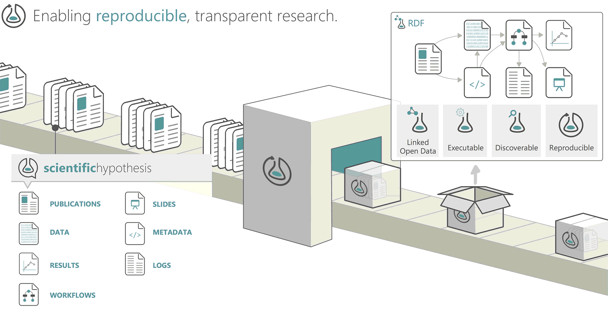

Introduction to Project Management¶
Learning Objectives
After this lesson, you should be able to:
- Discuss different levels of project management
- Describe tools and approaches to managing collaborative projects
- Describe best practices for computational project organization
- Understand benefits of establishing project management practices from the start of a project until after it ends
"Project Management" by itself may sound a bit vague and broad.
Definition
"Project management is the use of specific knowledge, skills, tools and techniques to deliver something of value to people. The development of software for an improved business process, the construction of a building, the relief effort after a natural disaster, the expansion of sales into a new geographic market—these are all examples of projects." - Project Management Institute
Here we use the term in two different contexts.
-
First, we'll go over the project management of scientific labs, groups, and projects, talking about things like governance, how to develop operations manuals, laying out roles and responsibilities, planning steps and the workflows which connect them.
-
Next, we'll go over project management as "research objects": making sure your data, code, and documents are well-organized. These are crucial for future topics like version control and reproducibility.
1. Classic Project Management¶
This type of overall project management may be required for some grants, and while it may be tempting to put in the minimal effort on one of the many pieces of paperwork you're required to complete, this type of overall project planning can be very useful.
Traditional Organizations
Major research (R1) universities are organized around hierarchical frameworks, often described using an Organizational Chart.

Scientific Research Projects are generally organized around a "Principal Investigator" with "Co-Principal Investigators" and "Senior Personnel" in supporting roles. Postdoctoral Researchers and gradaute students are often employed by research projects as part of their continued education and "professional preparation".

Given the nebulous breakdown of authority within lab groups and small research projects, the organization and governance of teams can be difficult to determine from the outside perspective. Indeed, internally team members on projects often do not know who is in charge or who reports to whom.
The Turing Way offer a lesson on Project Design related to effective project planning and management.
Project Governance¶
Definitions
Project Governance is the set of rules, procedures and policies that determine how projects are managed and overseen.
"The set of policies, regulations, functions, processes, and procedures and responsibilities that define the establishment, management and control of projects, programmes or portfolios." - APM (2012), open.edu
No matter how small, i.e., even single person-run projects, a good Project Governance structure can help keep work on track and headed toward a timely finish.
Establishing a project governance document at the onset of a project is a good way of setting boundaries, roles and responsibilities, pre-registration about what deliverables are expected, and what the consequences will be for breaking trust.
Example Governance Documents
Research Collaborations¶
Sahneh & Balk et al. (2020) Ten simple rules to cultivate transdisciplinary collaboration in data science, discuss the interactions amongst teams of diverse researchers.
Team Roles and Responsibilities¶
It can be easy for certain tasks to slip through the cracks. Established roles and responsibilities of teams can help ensure nobody gets saddled with too much work, and reduces chances of disputes among collaborators.
Project Management Professional (PMP)®
A Project Management Professional (PMP)® certification has been embraced globally as adding value to your professional resume.
Academia has also embraced PMP certification as part of continuing education for academic staff and faculty.
Team roles and titles
Again, The Turing Way provide an excellent set of examples of infrastructure job titles and roles on software driven projects:
Community Manager - "responsibilities include establishing engagement, organising community spaces and events, supporting people through inclusive practices, developing and maintaining resources, growing and evaluating use cases and collaborating with people involved in research and scientific communities." (1, 2)

Data Science Educator - "... data science in education refers to the application of data science methods, while other times it refers to data science as a context for teaching and learning" Rosenberg et al. (2020), Estrellado et al.
Data Scientist - a professional who uses analytical, statistical, and programming skills to collect, analyze, and describe data.
Data Steward - "... responsible for ensuring the quality and fitness for purpose of the organization's data assets, including the metadata for those data assets." - Wikipedia
Developer Advocate - sometimes called platform evangelism, advocates represent the voice of the user (in the case of open science, the scientists) internally to the project team or company, and the voice of the project or company externally to the public.
DevOps Engineer - a combinination of software development "Dev" and IT operations "Ops", responsibilities focus on "continuous delivery" and agile software development
Research Application Manager (RAM) - in some ways a combination of Community Manager and Developer Advocate,

Research Software Engineer - those who regularly use expertise in programming to advance research - US Research Software Engineer (US-RSE) Association
Open Source Research Software Maintainer¶
Becoming an open source software maintainer is not to be taken lightly.

When you create a new software, library, or package, you are becoming its parent and guardian.
Development Methodology¶

In software development, there are two common methologies which have similar applications to a research project:

Comparisons between methodologies
Breakout Discussion¶
Now we will do a breakout discussion section to talk about overall project management.
What is an example of a poorly managed project you were involved in? What contributed to this feeling?
Why do you think effective project management is important to Open Science?
What are some limitations to you, your lab/group, or your domain?
2. Research Objects¶
Definition
"A workflow-centric research object bundles a workflow, the provenance of the results obtained by its enactment, other digital objects that are relevant for the experiment (papers, datasets, etc.), and annotations that semantically describe all these objects." - Corcho et al. 2012
"... semantically rich aggregations of resources, that can possess some scientific intent or support some research objective." - Bechhofer et al. 2010
When we talk about project management in this section, we mean the way you organize data, code, images, documents, and documentation within a project. One way to think about this is in the context of "research objects" which condense into a single end point (think: a URL like a digital object identifier (DOI)) where others can come to reproduce your research.

Research Object Organization¶
If you've ever had to navigate someone else's computer or a GitHub repository, you probably know that a poorly organized project can greatly reduce its accessibility. On the other hand, a well-organized project can:
- make your work more accessible to others
- help collaborators effectively contribute to your project
- ease the growing pains of a rapidly scaling project
- make life much easier for your future self
It can be easy to overlook sound project management, opting for a "just get it done ASAP" approach to your work, but this almost always costs you more time in the end. The best time to introduce good project management is at the start of a project, and the second best time is right now.
Organization Examples¶
- Example data project organization from UArizona Libraries
- CookieCutter Templates
Example project structure:
.
├── AUTHORS.md
├── LICENSE
├── README.md
├── bin <- Your compiled model code can be stored here (not tracked by git)
├── config <- Configuration files, e.g., for doxygen or for your model if needed
├── data
│ ├── external <- Data from third party sources.
│ ├── interim <- Intermediate data that has been transformed.
│ ├── processed <- The final, canonical data sets for modeling.
│ └── raw <- The original, immutable data dump.
├── docs <- Documentation, e.g., doxygen or scientific papers (not tracked by git)
├── notebooks <- Ipython or R notebooks
├── reports <- For a manuscript source, e.g., LaTeX, Markdown, etc., or any project reports
│ └── figures <- Figures for the manuscript or reports
└── src <- Source code for this project
├── data <- scripts and programs to process data
├── external <- Any external source code, e.g., pull other git projects, or external libraries
├── models <- Source code for your own model
├── tools <- Any helper scripts go here
└── visualization <- Scripts for visualisation of your results, e.g., matplotlib, ggplot2 related.
Best Practices
-
Projects should be self-contained
- this is probably the most important concept
- strictly necessary for version control
- use relative paths
-
Use structure to organize files
-
Don't underestimate complexity
-
Keep raw data raw
-
Treat generated output as disposable
-
Avoid manual (point-and-click) steps as much as possible
- if necessary, record in detail
- should also be recorded in prior and subsequent steps
-
Avoid spaces in file and folder names
- consider
snake_casecamelCasePascalCasekebab-caseinstead
- consider
-
Describe structure in README
-
The best time to organize is at the start, the 2nd best is right now
-
Reorganize if necessary, but don't overdo it
-
Using same basic structure can help you navigate new/old projects
Automate the creation a working directory
You might find a nice basic structure that works as a good starting place for many of your projects, or smaller components of big projects.
Instead of having to repeat the process of making that directory structure, which could be tedious and introduce mistakes, you could write some code to do it for you.
The following is a bash script that takes one argument, the name of the new project (with no spaces), and creates that project with a premade directory structure for you to put files into.
#!/usr/bin/env bash
# Run this script with the name of the new project as
# an argument, like so: `bash make_project.sh my_project`
# It will generate a project with the following structure:
#.
#|-- README.md
#|-- data
#| |-- cleaned
#| `-- raw
#|-- images
#|-- reports
#`-- scripts
mkdir "$1"
cd "$1" || exit
echo "# $1" >> README.md
mkdir data
mkdir data/raw
mkdir data/cleaned
mkdir scripts
mkdir images
mkdir reports
This approach to automating repetitive tasks is something we'll dig into even deeper in later lessons.
Productivity Software
CryptPad - online rich text pad.
Draw.io - drawings and diagrams in browser.
Excel - love it or hate it, many people still work in it or with .xlsx format files.
Google Docs - is an online word processor included as part of the free, web-based Google Docs Editors suite offered by Google.
HackMD - online markdown editor.
JupyterBook - create documentation using Jupyter Notebooks and Markdown
MkDocs - is a fast, simple and downright gorgeous static site generator that's geared towards building project documentation.
LaTeX - is a high-quality typesetting system
Overleaf - LaTeX online document sharing platform.
ReadTheDocs - documentation using a variety of Markup langages
Software Heritage - preserves software source code for present and future generations.
Project Management Software
- Examples
Breakout Discussion¶
Now we will do a breakout discussion section to talk about research objects
Who here has created a research object or attempted to?
Do you think someone could reproduce your research by accessing your research object?
Where might a research object not work for your research?
What would a research object look like for your research?
Other Resources¶
There are many other resources on more specific elements of project management. We'll link to some of them here.
- Using R Projects with RStudio: https://support.rstudio.com/hc/en-us/articles/200526207-Using-Projects
- Using the R package
here: https://github.com/jennybc/here_here and https://here.r-lib.org/ - An even more compartmentalized approach to project management: https://hrdag.org/2016/06/14/the-task-is-a-quantum-of-workflow/
Self Assessment¶
Why is Project Management used in research?
-
Reduces [wasted] effort
-
Tracks progress or identifies more quickly when there is a lack of progress
-
Establishes a formal structure for teams
What are established roles and responsibilities of collaborative teams?
Example 1: Traditional University Research Teams
i. Principal Investigator, Co-Principal Investigators
ii. Senior Personnel, Postdoctoral Researchers, Bench Scientists
iii. (Graduate) Students
Example 2: Research Infrastructure Teams
Research infrastructure job titles and roles (Turing Way)
i. Community Managers
ii. Data Science Educators
iii. Data Scientists
iv. Developer Advocates
iv. Research Software Engineers
What are some uses of a Project Governance Document?
Answers
-
Sets expectations for behavior and operations
-
Establishes roles and responsibilities of PI, staff, and senior personnel
-
Uses Pre-registration techniques about what deliverables are expects, and by when
-
Establishes what consequences will be for breaking trust
Research Objects must include all components of research: governance document, manuals, documentation, research papers, analysis code, data, software containers
Answers
While a Research Object (RO) may include the entire kitchen sink from a research project, it does NOT always contain all of these things.
Fundamentally, a RO should contain enough information and detail to reproduce a scientific study from its linked or self-contained parts.
Components like large datasets may not be a part of the RO, but the code or analysis scripts should have the ability to connect to or stream those data.